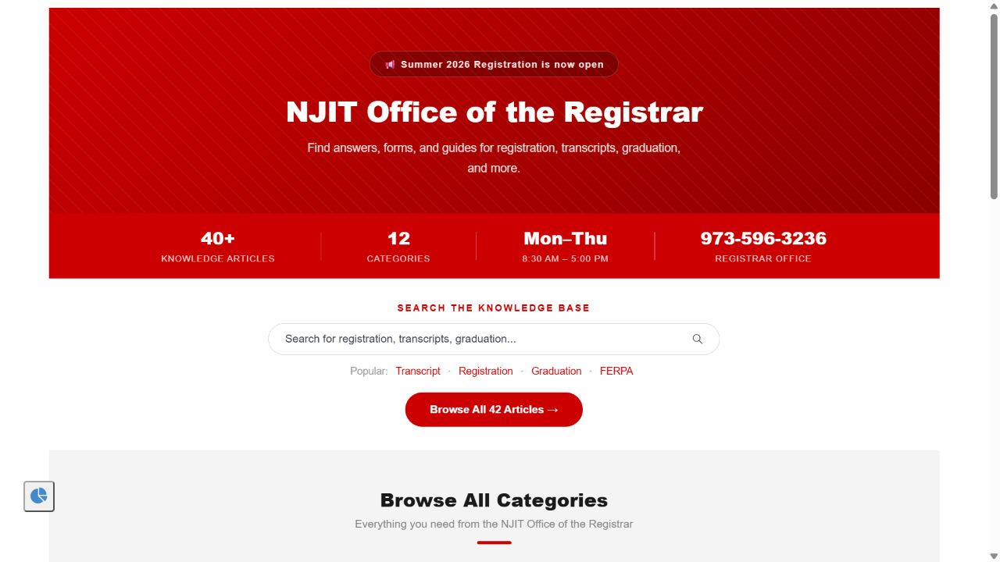

Custom portal home
Created a dedicated ServiceNow portal page with search, popular topics, category cards, quick links, office hours, and contact information.
Academic project · ServiceNow school lab
I built and organized a ServiceNow experience for common registrar questions. Students can search one knowledge base, browse clear categories, and follow structured articles instead of sorting through scattered information.
The need
Registration, transcripts, graduation, privacy, and academic policies each involve different steps and deadlines. The project needed a simple front door that helped students find the right answer without knowing how the information was stored.
I focused on plain labels, predictable article structure, visible contact information, and a content lifecycle that keeps revised guidance separate from older versions.
Portal experience
The home page puts search, popular topics, category browsing, quick links, and registrar contact details in one place. The layout is designed around the questions students are most likely to ask.

What I built
Created a dedicated ServiceNow portal page with search, popular topics, category cards, quick links, office hours, and contact information.
Organized 42 current articles into 12 categories such as registration, transcripts, FERPA, graduation, policies, and withdrawals.
Used overviews, prerequisites, numbered steps, issue-specific guidance, tables, callouts, and contact details to make articles easier to scan.
Reviewed and revised content through ServiceNow Knowledge Management so the latest guidance is published and earlier versions are clearly marked outdated.
DraftWrite and structure
→PublishMake available
→ReviseCorrect and clarify
→ReplaceMark older version outdated
Example revision
The registration article reached version 3.0 after I revised its organization and wording. The current version opens with a short overview, separates prerequisites from the process, explains common errors, and uses tables for holds and deadlines.
Follow the steps below to register for classes and address common registration issues.
Time conflictSelect a different section.
Hold on accountContact the office listed on the hold.
Skills demonstrated
Contact
Email is the best way to reach me. My resume and full portfolio are also available below.